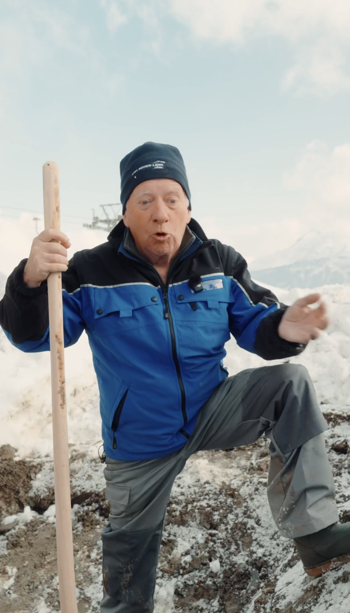
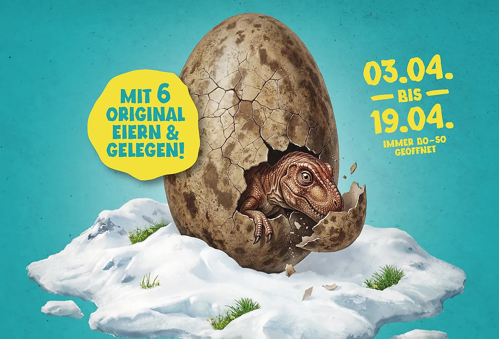

Social Media · Aprilscherz
Ein Scherz, der Wellen schlug.
Ein dreiteiliger 1.-April-Scherz, gedreht an einem einzigen Tag am Betelberg — mit Auftritt im Blick-Ticker der besten Schweizer Aprilscherze.
Die Idee: den 1. April nutzen, um auf die Dino-Ausstellung im Kulturhaus Lenk aufmerksam zu machen, die im Frühling gezeigt wurde. Ein vermeintlich sensationeller Fund auf der Baustelle des neuen Bergrestaurants am Betelberg lieferte den Aufhänger — über drei Reels liessen wir die Geschichte eskalieren, vom mysteriösen Fund über die "offizielle Bestätigung" bis zur Auflösung am 1. April. Gedreht wurde alles an einem einzigen Tag, in Zusammenarbeit mit Lenk-Simmental Tourismus und den Bergbahnen Lenk.


Views der Kampagne
3 Reels · 31. März – 1. April 2026
31. März – 1. April 2026 · alle 3 Reels
Vor Ort
Die Aktion bewarb die Dino-Ausstellung im Kulturhaus Lenk, die im Frühling gezeigt wurde — und lockte in der sonst ruhigen Zwischensaison viele zusätzliche Besucherinnen und Besucher an.
Earned Media
Der Fund schaffte es als eine der meistbeachteten Meldungen in den Blick-Ticker «Die lustigsten Scherzmeldungen am 1. April 2026» — gelistet noch vor Aprilscherzen von Schweizer Luftwaffe, Dr. Oetker und ESC-Sieger JJ.
Der Account heute

lenksimmentaltourismus
Lenk-Simmental Tourismus
Home of the Simmental Cow 🐮🏔️
Was wir geliefert haben